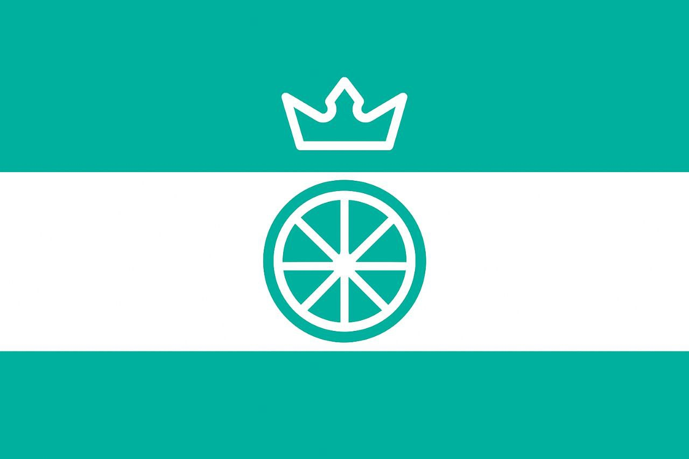

|  |
Королевство Лаймия"Slawo Laimia!" |
Королевство Лаймия - виртуальная страна в Океании. Она была основана 13 ноября 2023 года. Это монархическое государство, где процветают идеи просвещения и индустриализации, и каждый имеет право свободно самовыражаться.
Немного основной информации:
• Столица: Лимбург;
• Король: Родион I (2023 - н.в.);
• Валюта: Королевский Франк (другие обозначения: К.Ф.; LRF);
• Официальные языки: лаймский (в разработке), английский, русский, азбука Морзе;
• Население: 15 человек
Почему стоит посетить Лаймию?
Королевство Лаймия обладает прекрасной природой с огромным разнообразием редких представителей флоры и фауны, у нас есть один (пока что) главный государственный праздник, который также является выходным днём - День Справедливости 14 июля.
И самое главное - Лаймия постоянно развивается!
Прилететь к нам вы можете просто забронировав билеты в любой наш город через авиакомпанию
"Лаймийские Авиалинии"(*ссылка*) - для начала вам нужно вступить в группу обсуждений, затем зайти в нужную подтему (с названием аэропорта) и просто прописать команду "Как купить билет? 🤔", а дальше следуйте инструкциям
бота.